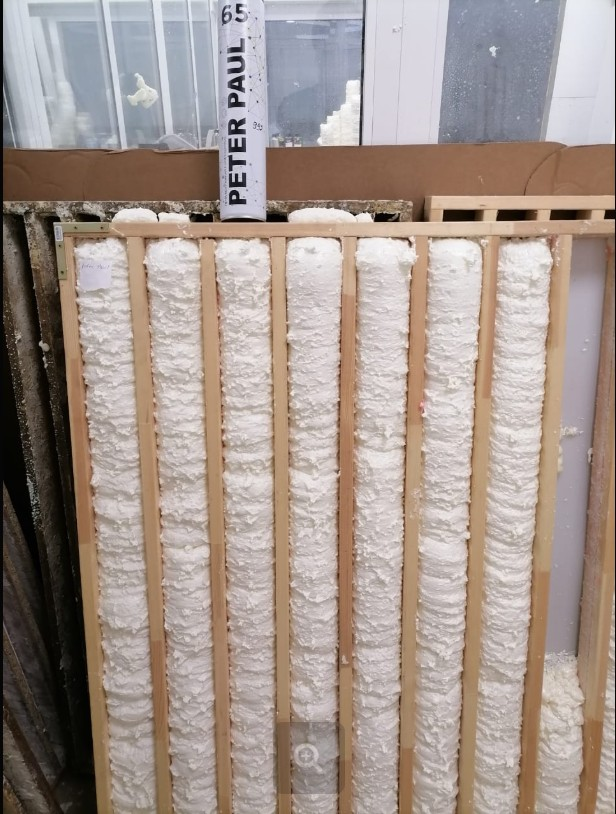
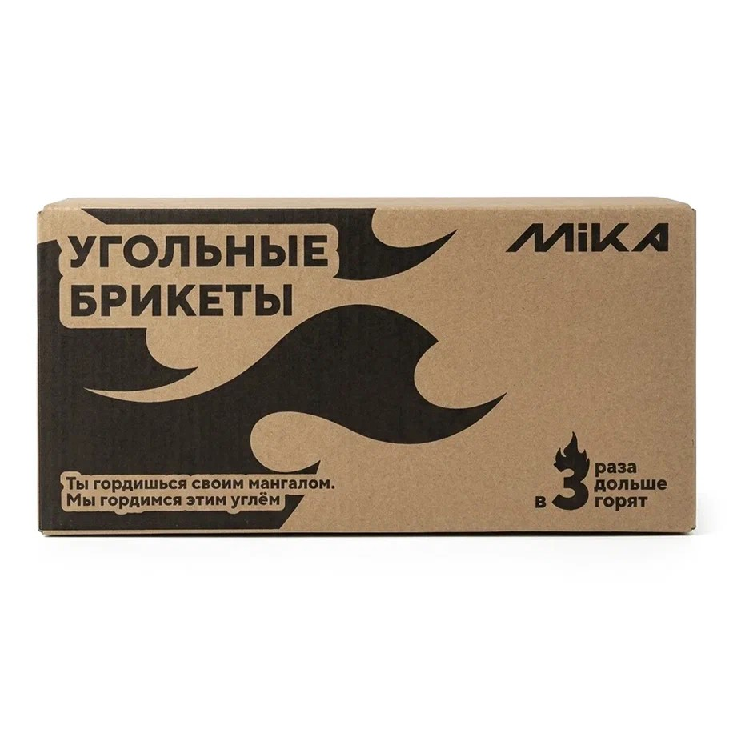

Своя марка · розница
MIKA
Главный собственный бренд. Если покупатель спрашивает «что у вас своё / посоветуйте нормальное недорого» — чаще начинайте с MIKA.

По материалам сайта «У Михалыча»: марка относительно новая, но уже с хорошими отзывами. Баланс качество + доступная цена + широкий ассортимент. Производство — на известных заводах России и Китая, контроль качества, низкий процент брака, сервис.
Что сказать покупателю
- «Это наша собственная марка — без переплаты за громкое имя».
- «Можно собрать всё нужное в одной линейке».
- «Подходит и для дома/дачи, и для рабочих задач».


Монтажные пены


Подбор: щели → бытовая; двери/окна → проф под пистолет; мороз → зимняя; огонь → огнестойкая; плиты/блоки → клей-пена. Шпаргалка — на главной.
Все насосы MIKA
Полный список из каталога. Уточняйте наличие и артикул на складе.
| Артикул | Наименование | Ключевое |
|---|---|---|
| 335110В | Вибрационный ВПН-10В (верхний забор) | 280 Вт · 18 л/мин · кабель 10 м · напор 60–70 м |
| 335110Н | Вибрационный ВПН-10Н (нижний забор) | 280 Вт · 18 л/мин · кабель 10 м · напор 60–70 м |
| 335115В | Вибрационный ВПН-15В (верхний забор) | 280 Вт · 18 л/мин · кабель 15 м |
| 335115Н | Вибрационный ВПН-15Н (нижний забор) | 280 Вт · 18 л/мин · кабель 15 м |
| 335125В | Вибрационный ВПН-25В (верхний забор) | 280 Вт · 18 л/мин · кабель 25 м |
| 335125Н | Вибрационный ВПН-25Н (нижний забор) | 280 Вт · 18 л/мин · кабель 25 м |
| 335140В | Вибрационный ВПН-40В (верхний забор) | 280 Вт · 18 л/мин · кабель 40 м · выход ¾″ |
| 33528D | Дренажный ДН-750 Вт (грязная вода) | 750 Вт · 10 м³/ч · напор 10 м · частицы / универсальный фитинг |
| 335275D | Дренажный НД-750 | 750 Вт · 13 000 л/ч · напор 7,5 м · частицы до 30 мм |
| 335324L | Насосная станция НС-750 · 24 л | 750 Вт · напор 50 м · 3600 л/ч · бак 24 л · чугун |
| 3354370В | Скважинный винтовой СН-В 370 Вт | 25 л/мин · напор 45 м · Ø 3,5″ · кабель 20 м |
| 3354550В | Скважинный винтовой СН-В 550 Вт | 30 л/мин · напор 90 м · кабель 20 м |
| 335430Ц | Скважинный центробежный СН-Ц 370 Вт | 47 л/мин · напор 50 м · кабель 30 м · Ø 3″ |
| 335450Ц | Скважинный центробежный СН-Ц 550 Вт | 47 л/мин · напор 70 м · кабель 50 м · Ø 3″ |
| 335543П | Поверхностный ПН-800 | 800 Вт · напор 43 м · 5000 л/ч · всас 8 м |


В зале: верхний забор — чистая вода сверху; нижний — когда нужно забрать почти до дна. Скважинный винтовой терпит больше примесей, центробежный — чище вода и выше производительность.
Угольные брикеты MIKA, 3 кг
Арт. 331113. Плотные брикеты — разжигать иначе, чем обычный уголь из пыли.


Сценарий №1 — самый быстрый (стартером)
Самый быстрый способ разжечь именно эти плотные брикеты — стартером. Засыпаете их сверху, снизу ставите один-два спиртовых тюбика. Поджигаете. За счёт плотной тяги внутри цилиндра тяжёлые брикеты схватываются равномерно. Буквально 15–20 минут — и всё готово.
Сценарий №2 — экономичный «Домиком» (без стартера)
Поскольку брикеты тяжелее и плотнее обычной древесной пыли, им нужен правильный подвод воздуха снизу.
Шаг 1 (классический). Строим из самих брикетов колодец или шалашик. Пустота внутри даст отличную тягу. А внутрь «домика» подкладываем лёгкие дровишки — щепу, тонкие ветки или лучину. Они быстро займутся и плавно разогреют массивные брикеты по краям. Через те же 15–20 минут всё прогорит ровно.
Шаг 2 (гибридный, если нет мелких дров). Если тонких дров под рукой нет, можно использовать спиртовые тюбики. Кладёте их прямо на дно мангала, строите над ними тот же домик из брикетов, а сверху можете накинуть немного крупных дров для аромата, если нужно. Тюбики дадут мощный импульс снизу, чтобы пробить плотность брикета.
Важно сказать покупателю
С этими брикетами главное правило — не торопиться. Не лейте жидкость и не пытайтесь раздуть их мехами сразу. Дайте этим 15–20 минут. И где-то в начале придётся придерживать огонь, аккуратно подкидывая мелкие веточки, пока конструкция не окрепнет.
Остальной ассортимент
- Бетоносмесители MIKA — рядом смотрите также TORRA.
- Масла — 2T/4T, цепь, компрессор, ТАД-17 (не путать типы!).
- Растворители и подготовка — уайт-спирит, 646, 650, ацетон, обезжириватель, грунтовка, огнебио.
- Тачки, мембраны/плёнки, метизы, биты, диски, станки, рулетки/ножи, теплоноситель, лопаты, шланги, электроды, автохимия.
- Сад — катушки и леска для триммера.
Каталог: gvozditut.ru/brands/mika